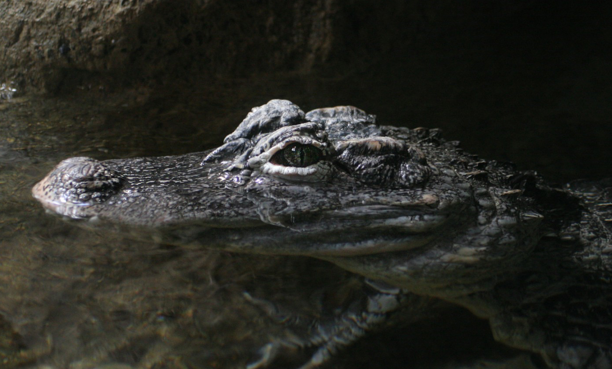

Lista de reptiles

Dragón de Komodo

Aligátor de China

Caimán de Cuvier

Tortuga de espolones africana

Tortuga gigante de las Galápagos

Tortuga gigante de Aldabra

Boa terrestre de Dumeril

Galápago negro